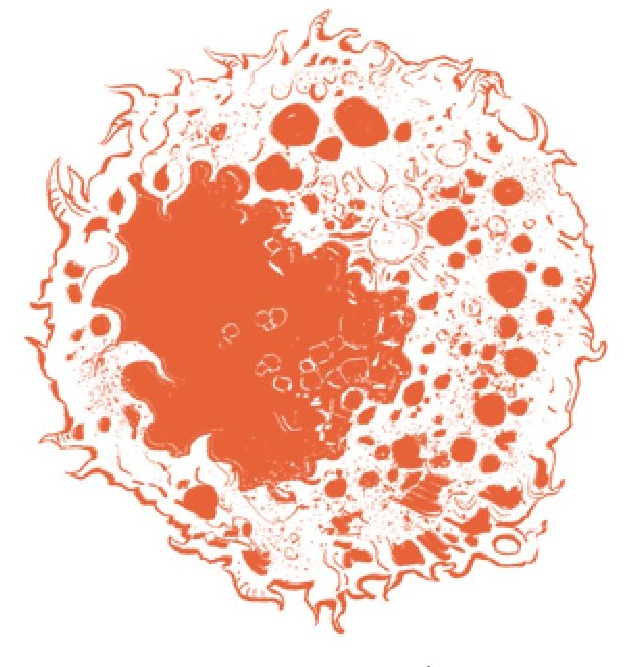

...recebeu é a resposta definitiva para sua busca:
“Dê-me a sua bênção. Macule minha carne com a maldição do semeador. De novo e de novo. Até que esteja feito. Até que um anel amaldiçoado se forme, que possa um dia macular a própria Ordem. Incontáveis, eu matei. E incontáveis, eu maculei. E em breve os frutos nascerão. Centenas renascerão amaldiçoados, e eles gerarão milhares de crianças amaldiçoadas, que gerarão dezenas de milhares a mais. Alguns desses nascerão exatamente como eu, e eles matarão, e macularão, e abençoarão em meu lugar! Os tolos podres. Meu destino foi o mais grandioso, o mais brilhante de todos eles! Minha carne corpórea jaz no cárcere do esgoto sob a Capital.”
– Comedor de EstrumeEle não será mais um instrumento de mácula, mas sim o receptáculo para ela. Uma maldição mais cósmica e de longo alcance será gestada dentro dele.
Retornaremos ao Comedor de Estrume e sua Runa de Reparo mais tarde, mas por ora vamos discutir os Agouros e a questão da alma.
Há um poder nos Agouros. Tanto Morgott quanto Mohg possuem poder em seu sangue. O poder de Mohg parece ter sido intensificado por seu contato com a Mãe Disforme, e o de Morgott é liberado quando o levamos ao limite em nossa batalha pelo Trono Prístino.
Os chifres dos Agouros também parecem estar ligados ao seu poder, à sua maldição. Especificamente, chifres de Agouro crescem na maldição do semeador, implicando que esses chifres estão diretamente ligados à própria maldição. Apenas os Agouros com chifres podem utilizar seus poderes mais avançados.
Com isso, refiro-me à habilidade dos Agouros reais de soprar fogo amaldiçoado, liberar seu bombardeio de maldição e envolver suas espadas nesta Chama de Agouro marrom-escura. Esta é uma habilidade que não é usada pelos Agouros cujos chifres foram cortados.
A cor usada por esses poderes é única e, ainda assim, compartilha um matiz semelhante com os feitiços de morte. Isso sugere uma conexão com o elemento da morte, o que faz sentido se considerarmos que o Agouro pode não ter alma.
Mais interessante, no entanto, é que essa cor de chama é utilizada por outro tipo de inimigo, os Regressados e os Invocadores de Aparições. Os Invocadores de Aparições são os seres encurvados que tocam o...